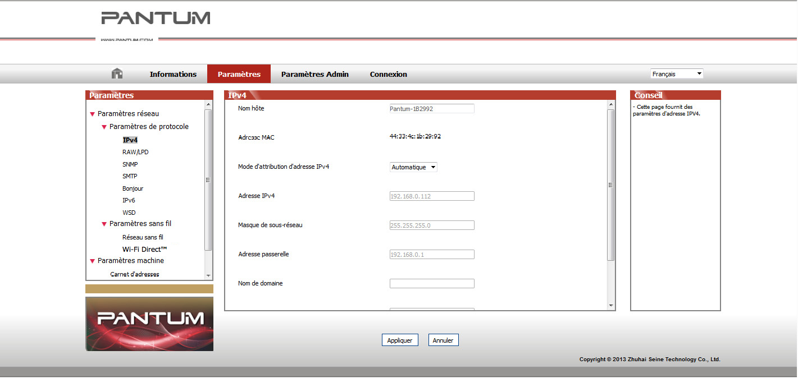

4. Paramètres du réseau câblé (pour modèles d'imprimantes avec réseau câblé)
Vous devrez peut-être définir certains paramètres réseau pour l'imprimante, à partir du serveur Web intégré.
4.1. Réglage de l'adresse IP
L'adresse IP de l'imprimante peut être obtenue automatiquement via la fonction DHCP ou définie manuellement.
| Paramétrage automatique
La fonction de paramétrage automatique DHCP est activée par défaut pour l'imprimante.
1. Connectez l'imprimante au réseau par le biais d'un câble réseau, puis terminez les tâches préliminaires pour le démarrage.
2. L'imprimante recevra automatiquement l'adresse IP attribuée par le serveur. Elle pourra être utilisée quelques minutes plus tard.
|
|
Remarque :
|
• Si la fonction DHCP ne permet pas d'obtenir automatiquement une adresse IP, l'imprimante utilisera automatiquement l'adresse IP par défaut : 169.254.xx.xx.
• En raison des caractéristiques de la fonction DHCP, l'adresse IP de l'imprimante, qui est automatiquement attribuée par le réseau, peut varier si l'imprimante n'a pas été utilisée pendant une longue période ou si le point d'accès du réseau change. Il est alors possible que la connexion à l'imprimante échoue. Il est recommandé que l'adresse IP attribuée automatiquement par le réseau soit liée à l'adresse Mac de l'imprimante, tant que la fonction DHCP est activée.
|
| Paramétrage manuel
Saisissez l'adresse IP de l'imprimante dans la barre d'adresse du navigateur Web, afin d'ouvrir le serveur Web intégré.
1. Cliquez sur Paramètres dans la barre de navigation pour ouvrir la page Paramètres.
2. Sélectionnez Paramètres réseau - Paramètres IPV4.
3. Définissez le mode d'attribution d'adresse IP (Manuel), l'adresse IP, puis le masque de sous-réseau. Les autres informations sont facultatives.
4. Cliquez sur Appliquer pour enregistrer les paramètres.
4.2. Installation de l'imprimante sur le réseau
Dans cette configuration, l'imprimante est directement connectée au réseau. Elle peut être paramétrée afin de permettre à tous les ordinateurs d'un réseau d'imprimer directement sur celle-ci.
1. Avant de démarrer l'imprimante, connectez d'abord le câble réseau au port réseau de l'imprimante, afin d'établir une connexion directe au réseau.
2. Mettez l'imprimante en marche et attendez que le voyant d'état du panneau de commande indique le statut Prêt, comme illustré sur l'image ci-dessous.

3. Insérez le CD de l'imprimante dans votre ordinateur. Si le logiciel d'installation ne se lance pas automatiquement, double-cliquez sur le fichier « setup.exe » que vous trouverez dans le CD.
4. Veuillez suivre les instructions du logiciel d'installation.
5. Continuez pour terminer l'installation.
4.3. Paramétrages des produits réseau
4.3.1. Consulter ou modifier les paramètres réseau
Vous pouvez utiliser le serveur Web intégré pour consulter ou modifier les paramètres IP.
1. Appuyez longuement sur le bouton « Annuler/Continuer » du panneau de commande pour imprimer la page d'informations Demo et afficher l'adresse IP de l'imprimante. Vous pouvez imprimer la page Demo en appuyant longuement sur le bouton du panneau de contrôle (comme le montre l'image ci-dessous) lorsque l'imprimante est en veille.
2. Saisissez l'adresse IP de l'imprimante dans la barre d'adresse du navigateur Web pour accéder au serveur Web intégré.
3. Cliquez sur l'onglet Paramètres pour obtenir les informations réseau. Modifiez les paramètres comme vous le souhaitez.

4.3.2. Définir ou modifier le mot de passe de connexion au serveur Web
Utilisez le serveur Web intégré pour définir ou modifier un mot de passe réseau.
|
|
Remarque :
|
• Le nom d'utilisateur par défaut est « admin » et le mot de passe initial est « 000000 ».
|
1. Pour ouvrir le serveur Web intégré, veuillez vous connecter.
2. Cliquez sur l'onglet Paramètres Admin.
3. Entrez le nouveau mot de passe dans la case Mot de passe, puis dans la case Confirmer le mot de passe.
4. En bas de la fenêtre, cliquez sur le bouton Appliquer pour enregistrer les paramètres.
4.3.3. Rétablir les paramètres d'usine
Si vous souhaitez réinitialiser l'ensemble des paramètres de l'imprimante, vous pouvez restaurer les paramètres d'usine en appuyant longuement sur le bouton « Annuler/Continuer », au moment où vous allumez l'imprimante qui était hors tension. Pour terminer la réinitialisation, appuyez sur ce bouton pendant 10 secondes jusqu'à ce que l'imprimante passe à l'état Prêt.